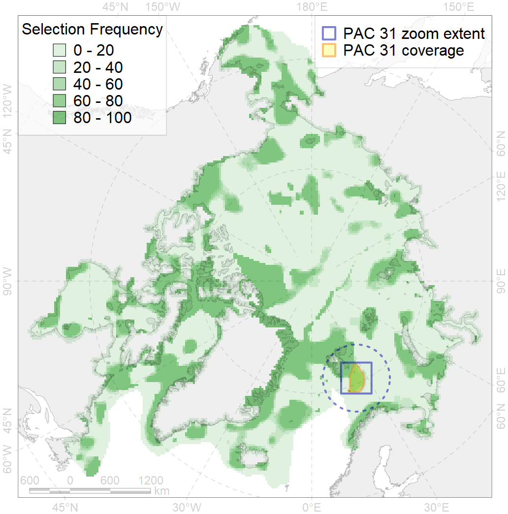
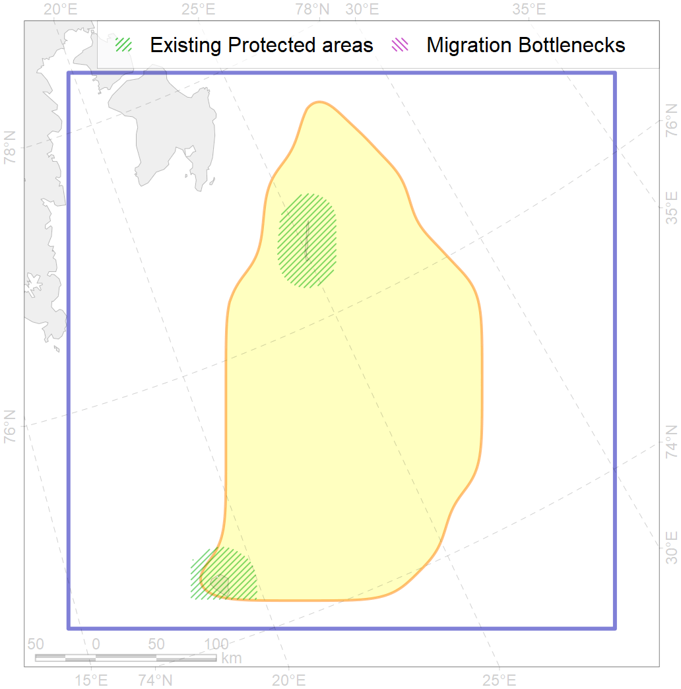

31
For more information regarding this PAC and to conduct custom spatial analysis using the PAC data or any spatial query, please consult Accenter.

0
CFs entirely within the PAC area
1
CFs at least 25% within the PAC area
4
CFs with their target entirely achieved in the PAC
9
CFs with at least 50% of their target achieved in the PAC
| CF ID | CF Name | Proportion in the PAC | Conservation Target | Contribution to ArcNet Target Achievement | PAC’s Contribution to the Achieved Target |
|---|---|---|---|---|---|
| 7252 | Benthic communities, Svalbard bank | 68.6% | 70.0% | 96.6% | 90.6% |
| 7068 | Benthic communities, I.1.1.5.1. Barents and Kara Seas shelf banks, shallow ( <100 m) | 24.6% | 9.3% | 262.4% | 37.2% |
| 7056 | Biological communities, cold water seeps and mud vulcanoes | 21.4% | 75.0% | 28.6% | 27.3% |
| 4040 | Polar cod (Boreogadus saida) larvae distribution range, Barents Sea | 19.8% | 48.0% | 40.6% | 23.4% |
| 6093 | Little auk (Alle alle alle) breeding colonies foraging range buffer, Spitsbergen | 15.6% | 36.0% | 41.0% | 19.2% |
| 2015 | Bearded seal (Erignatus barbatus) whelping grounds, Spitsbergen region | 15.0% | 18.0% | 79.3% | 20.2% |
| 5061 | Humpback whale (Megaptera novaeanglia) summer feeding grounds , eastern North Atlantic | 13.9% | 12.0% | 108.2% | 30.2% |
| 6082 | Thick-billed murre (Uria lomvia lomvia) breeding colonies | 9.5% | 72.0% | 13.2% | 11.2% |
| 2020 | Harp seal (Pagophilus groenlandicus) feeding grounds, Barents Sea | 8.3% | 24.0% | 31.7% | 31.6% |
| 6090 | Atlantic puffin (Fratercula arctica naumanni) breeding colonies foraging range buffer | 7.9% | 48.0% | 15.4% | 9.7% |
| 6022 | Atlantic puffin (Fratercula arctica naumanni) breeding colonies | 7.6% | 72.0% | 10.6% | 8.0% |
| 6056 | Common eider (Somateria mollissima borealis) breeding / moulting grounds, Spitsbergen | 6.8% | 55.2% | 12.4% | 7.1% |
| 5051 | Fin whale (Balaenoptera physalus) summer feeding grounds, eastern North Atlantic | 6.4% | 26.4% | 22.4% | 16.3% |
| 3026 | MIZ biological communities, April, Barents Sea | 6.2% | 12.0% | 49.2% | 11.7% |
| 4094 | Fish complex, Subarctic, Barents Sea | 6.0% | 6.0% | 92.4% | 17.1% |
| 1005 | Walrus (Odobenus rosmarus rosmarus) winter grounds, Spitsbergen and FJL region | 5.8% | 27.6% | 20.1% | 7.8% |
| 5099 | White-beaked dolphin (Lagenorhynchus albirostris) feeding grounds, eastern North Atlantic | 4.8% | 12.0% | 36.7% | 13.2% |
| 6047 | Black-legged kittiwake (Rissa tridactyla pollicarius) breeding colonies | 4.7% | 64.8% | 7.3% | 6.3% |
| 4054 | Shorthorn sculpin (Myoxocephalus scorpius), European populations, home range | 4.7% | 3.0% | 145.7% | 10.6% |
| 4027 | Atlantic salmon (Salmo salar), European populations, feeding / migration grounds | 3.6% | 20.4% | 16.2% | 11.1% |
| 7066 | Benthic communities, I.1.1.3. Barents and Kara Seas shelf plains | 3.5% | 3.7% | 88.5% | 7.3% |
| 4057 | American plaice (Hippoglossoides platessoides), American populations, home range | 3.5% | 3.0% | 106.9% | 9.7% |
| 6004 | Little auk (Alle alle polaris) wintering grounds | 3.4% | 18.0% | 17.3% | 9.6% |
| 4076 | Fish communities, North Barents - Kara Seas Zoogeographic District, High Arctic Shelf Province, Arctic Region | 3.2% | 7.1% | 40.7% | 10.5% |
| 9003 | Polar bear (Ursus maritimus), Barents Sea subpopulation, home range | 3.0% | 26.4% | 10.8% | 5.3% |
| 4049 | Haddock (Melanogrammus aeglefinus) home range | 2.9% | 6.0% | 44.2% | 7.0% |
| 4001 | Fish complex, Arctic, Barents Sea | 2.6% | 6.0% | 39.1% | 7.1% |
| 5067 | Minke whale (Balaenoptera acutorostrata) feeding grounds, eastern North Atlantic | 2.2% | 12.0% | 17.5% | 5.4% |
| 4087 | Fish communities, Murman - Spitsbergen area, Barents Zoogeographic District, Subarctic Transitional-Atlantic Province, Arctic Region | 2.0% | 18.6% | 10.3% | 6.5% |
| 7067 | Benthic communities, I.1.1.4. Barents and Kara Seas shelf troughs | 1.9% | 3.0% | 51.5% | 8.3% |
| 6023 | Atlantic puffin (Fratercula arctica naumanni) winter grounds | 1.8% | 24.0% | 6.8% | 5.5% |
| 5046 | Bowhead whale (Balaena mysticetus), Spitsbergen population, home range | 1.8% | 18.6% | 8.7% | 8.6% |